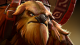
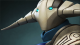
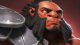
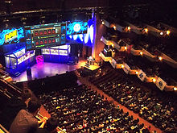
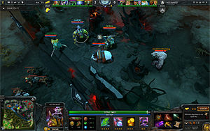

Dota 2 is a multiplayer online battle arena video game, the stand-alone sequel to the Defense of the Ancients (DotA) Warcraft III: Reign of Chaos and Warcraft III: The Frozen Throne mod.
Developed by Valve Corporation, Dota 2 was released as a free-to-play title for Microsoft Windows, OS X and Linux in July 2013, concluding a Windows-only public beta testing phase that began in 2011.
The game is available exclusively through Valve's content-delivery platform, Steam. Dota 2 is played in matches involving two teams of five players, each of which occupies a stronghold at a corner of the map. Each stronghold contains a building called the "Ancient", which the opposite team must destroy to win the match. Each player controls a "Hero" character and focuses on leveling up, collecting gold, acquiring items and fighting against the other team to achieve victory.
Development of Dota 2 began in 2009, when the developer of the DotA mod, IceFrog, was hired by Valve as lead designer. Dota 2 was praised by critics for its gameplay, production quality and faithfulness to its predecessor. However, the game was criticized for its steep learning curve and inhospitable community. Dota 2 has become the most actively played game on Steam, with daily peaks of over 800,000 concurrent players.
Dota 2 is a multiplayer online battle arena (MOBA) game in a three-dimensional environment, presented from an oblique high-angle perspective. The player commands one of 110 controllable character "Heroes." Each Hero begins the match at level one and becomes more powerful by accumulating experience points through combat, thereby leveling up to the maximum level of twenty-five. With every level gained the player either selects a new ability for their Hero to learn or enhance their general statistics. Each Hero's method of combat is influenced by its primary property: Strength, Agility, or Intelligence.
Each match of Dota 2 takes place on a functionally symmetrical map that features the strongholds of two warring factions, the Radiant and the Dire. The Radiant is based at the southwest corner of the map, while the Dire is based at the northeast corner; the two sides are divided by a river that runs perpendicular to the central lane. These factions are defended by up to five players. In each stronghold is a critical structure called the "Ancient", a fountain that provide health and lesser structures. These bases are connected by three paths, referred to as "lanes"—two run alongside the edges of the map, while one runs directly between the two bases. The lanes are guarded by defensive Towers, as well as autonomous characters called "creeps", which periodically spawn in groups and travel along the lanes, attacking enemies they encounter.[9] Featured across the map are hostile characters referred to as "neutrals", which are not aligned to either faction and are primarily located in the forests (primarily referred to as "the jungle" in the game, hence the term "jungler" for one who attacks neutral creeps in the jungle). Located in a tarn on the Dire side of the east part of the river is a neutral creep "boss" called "Roshan", who typically requires multiple team members to kill and drops powerful the powerful item "Aegis of Immortality", and significant amounts of gold and experience.
Dota 2 features items, which the player stores in an inventory. These items are acquired predominantly through purchase with gold, the in-game currency. Items vary in function: some enhance the statistics of a Hero, while others grant additional abilities. The player automatically receives small increments of gold continuously, though they can obtain more by destroying enemies. Killing non-player characters grants gold only to the player who lands the final blow, whereas killing enemy Heroes grants gold to the player's nearby allies as well. Destroying Towers or killing Roshan gives gold to all players on the team. "Denying" is a feature of the game where players inhibit the enemy's ability to accumulate gold and experience by killing an allied unit or destroying an allied structure before the enemy can do so.
Dota 2 features seasonal events, which provide players with the option of playing the game with special game modes that alter the aesthetics and objectives. With the seasonal event game modes, the central focus of the game shifts away from the standard battle composition, in order to focus on new objectives central to the seasonal events. So far, there have been three seasonal events: the Halloween-themed Diretide event, the Christmas-themed Frostivus event, and the New Bloom Festival, which celebrates the coming of spring.
The earliest version of Dota emerged in 2003, with the release of
the custom Warcraft III: Reign of Chaos mod called Defense of the
Ancients (DotA), which was created and updated by the pseudonymous
designer "Eul". After Blizzard Entertainment released the expansion
pack The Frozen Throne in 2003, clones of the DotA mod competed for
popularity, with DotA: Allstars by Steve "Guinsoo" Feak being the
most popular. With the assistance of his friend, Steve "Pendragon"
Mescon, Feak created the official DotA community website
dota-allstars.com and formed a holding company for it called
DotA-Allstars, LLC. When Feak retired from developing DotA in 2005,
a friend, under the pseudonym "IceFrog", took his place. The popularity of DotA increased significantly; it became one of the most popular mods in the world, and, by 2008, a prominent electronic sports title. In May 2009, IceFrog and Mescon had a falling out, prompting the latter to create a new official community at playdota.com.
According to Valve Corporation managing director Gabe Newell, the
company's investment in Defense of the Ancients began when several
veteran employees—including Team Fortress designer Robin Walker,
programmer Adrian Finol and project manager Erik Johnson—became
interested in the mod and attempted to play it competitively. They
began to correspond with IceFrog about his long-term plans for the
mod. The email conversations culminated in Erik Johnson offering
IceFrog a tour of the company, after which he was hired to develop a
sequel. The first public notification regarding the development of
the game was a post on IceFrog's blog on October 5, 2009, in which
he disclosed that he would be leading a team at Valve. No further
word was given until Dota 2 was officially announced on October 13,
2010, when the website of Game Informer revealed a general synopsis
of the game and its development. The resultant surge of traffic
crashed Game Informer's servers.
With Valve's acquisition of the franchise, the company adopted
the term "Dota", which derives from the original mod's acronym for
"Defense of the Ancients". Erik Johnson explained that this was for
the reason that the term "Dota" refers to a concept, rather than an
acronym. Shortly after a questions and answers session by IceFrog
about the new game, Valve filed a trademark claim. At Gamescom 2011,
Gabe Newell said that the trademark was a necessary measure for
developing a sequel with the already identifiable brand name. Steve Feak and Steve Mescon expressed their concern that Valve did not have the right to trademark the Dota name, which they believed was a community asset. They filed an opposing trademark for "DOTA" on behalf of DotA-Allstars, LLC, then a subsidiary of their employer, Riot Games, on August 9, 2010.
Rob Pardo, the executive vice president of Blizzard Entertainment,
expressed a similar concern, explaining his perspective that the
DotA name was an asset of their game's community. Blizzard acquired
DotA-Allstars, LLC from Riot Games and filed an opposition against
Valve in November 2011, citing Blizzard's ownership of both the
Warcraft III World Editor and DotA-Allstars, LLC as proper claims to
the franchise. On May 11, 2012, Blizzard and Valve announced that
the dispute had been settled, with Valve retaining the commercial
franchising rights to the term "Dota", while non-commercial usage of
the name could still be utilized.
Early on in development, the goal for Dota 2 was to translate the
aesthetic aspects of DotA to the Source engine, while presenting
expanded support for the game's framework. Dota 2 features the
factions of the Radiant and the Dire in the stead of the Sentinel
and the Scourge respectively, with the characters' respective
alignment preserved, while also re-establishing their individual
character traits in a stand-alone form. Character names, abilities,
items, map design and other fine details remain predominantly
unchanged, but the Source engine allows for continued, scaled
development to bypass engine limitations of the Warcraft III World
Editor. The Dota profile matchmaking feature scales a player's
automated placement with their estimated skill level, which supports
the competitive experience. Unranked practice matches can also be
played with other human players, AI bots, or alone. In the debut
questions and answers post at the Dota 2 blog, IceFrog stated that
the game would serve as the long-term continuation of the
intellectual property of the original mod, building upon the
gameplay without making many significant core changes that could
potentially alter the overall experience. According to Valve, the company contracted major contributors to DotA's
popularity, in order to assist in developing Dota 2, including the
mod's original creator known as "Eul", as well as loading screen
artist Kendrick Lim of Imaginary Friends Studios. In addition, the composer of Warcraft III, Jason Hayes, was contracted by Valve to collaborate with Tim Larkin to develop Dota 2's musical score.[1] IceFrog stated that in order to further emphasize Dota 2's premise as a continuation of DotA, contributions would remain consistent from sources outside the main development team.
To accommodate Dota 2, Valve updated the Source engine to include
new features, such as high-end cloth modeling and improved global
lighting. Dota 2 utilizes Steam to provide social and community
functionality for the game, while Steam users can save personal
files and settings using the Steam Cloud. In the tradition of
Valve's competitive-oriented games, Dota 2 also features multiple
ways to spectate live matches. The game host has the option to fill
open slots in matches with bots if enough human players are not
available. In addition to Steam-based competitive matches, Valve
introduced local area network (LAN) multiplayer connectivity to Dota
2 in September 2013. In November 2013, Valve introduced a coaching system, which allows experienced players to tutor newer players with special in-game tools.
Valve added support for tournaments in June 2012. Tournaments are available for spectating in-game via the purchase of tournament tickets in the "Dota Store", which provide an alternative to viewing live streams online. The tickets allow players to watch both live and completed matches; a portion of the ticket fees go to the tournament organizers. In addition, the game's software automatically recognizes groups of players that frequently play together as teams and catalogs them as such in matches.
As part of a plan to create a social network based around Dota 2,
Gabe Newell announced in April 2012 that the game would be
free-to-play, with player contributions to the community being a
cornerstone feature. In June 2012, the Dota development team at
Valve formally confirmed that the game would be free-to-play with no
added cost for having the full roster of Heroes and item inventory
readily available. Income for Dota 2 would, however, be maintained
through the Dota Store, where players could purchase various
exclusively cosmetic virtual goods, such as in-game items. Until the
game's release, players were able to purchase an early access
bundle, which included a digital copy of Dota 2, along with several
in-game cosmetic items. The Dota Store includes both custom
creations developed by Valve and a selection of user-created
products from the Steam Workshop that have been approved by Valve.
The market model was fashioned after Team Fortress 2, which had
reimbursed designers of cosmetic items with $3.5 million of income
by the time it had become free-to-play in June 2011. In January 2014, Gabe Newell revealed that the average Steam Workshop contributor to Dota 2 made approximately $15,000 from their creations in 2013.
Earthshaker, a Strength Caster.Sven, a Strength Warrior.Axe, a Strength Warrior.The International, the largest yearly DotA 2 tournament world-wide.Gameplay, a screenshot of an on-going DotA 2 game.

{kind=link}
{kind=link}
{kind=link}
{kind=link}
{kind=link}